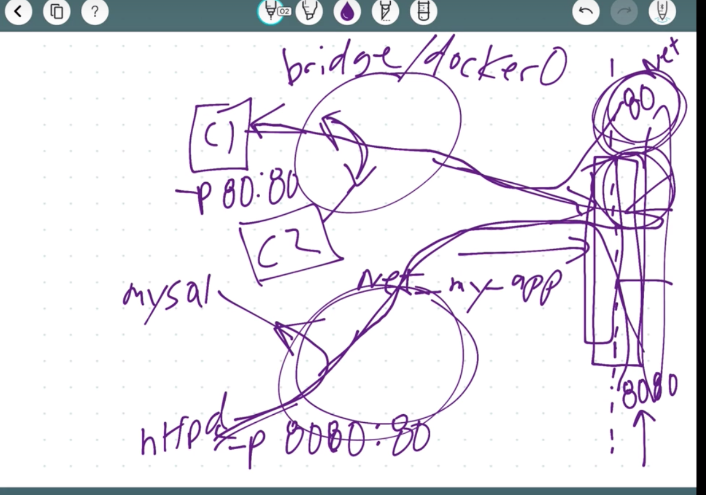

2019年3月更新
- 更新docker swarm及secret
为什么要用Docker
Docker是一个轻量级的虚拟系统，我们叫它容器。因不同系统和版本的不同，部署服务器的时候总是会出现不同的错误，让开发效率大大降低。docker的出现让服务器开发不再受限于系统版本，让一套代码永远可以在不同服务器上一致运行。同时docker也是微服务架构中不可缺少的部分，让不同微服务之间协调效率高效。
第一个Docker Container
Docker安装
Linux可以通过get.docker.com快捷安装。
复制文档前面注释中的代码脚步即可
安装完成后，这是几个常用的CLI(command line interface)命令
1 | systemctl start docker // 启动docker服务 |
2 | systemctl stop docker // 停止docker服务 |
3 | systemctl restart docker // 重启docker服务 |
4 | systemctl status docker // 查看docker服务状态 |
5 | systemctl enable docker // 开机启动docker服务 |
6 | systemctl disable docker // 取消开机启动docker服务 |
在运行systemctl start docker后，可以试一下docker container run hello-world，之后会在命令栏中print出来行 hello-world即代表安装成功
制作一个Nginx的容器
每一个容器都相当于一个虚拟系统
1 | docker container run --publish 80:80 --detach --name webhost nginx |
这行命令的运行流程：
- 从Dokcer hub下载nginx的镜像(image)
- 创建新的名为webhost的container
--publish 80:80为开放容器的80接口- 将来自host的80接口网络请求路由至80容器接口
- –detach 让这个container在后台运行
容器部署成功后，运行下面的命令会显示本地活跃docker实例, 添加 -a会显示全部实例(包括已经停止的实例)
1 | docker container ls |
停止一个容器
1 | docker container stop container-name |
查看log
1 | docker container logs container-name |
删除container。名称或id可以叠加用于删除多项container
1 | docker rm container-name |
Image镜像 vs Container容器
Container是Image的实例
可以理解为Image是一个class类，container是新建的对象
Image是如和新建Container的一个说明书
Cheat sheet
向container里传递环境参数
1 | --env or -e |
查看container里面的top process
1 | docker container top container-name |
显示这个container的metadata（配置，网络等）
1 | docker container insepct |
显示实时信息（简单的监测）
1 | docker container stats |
进入容器交互(interactive)模式(就是进去虚拟系统)
1 | docker container run -it CONTAINER_NAME bash |
-t : pseudo-TTY
-i : interactive
创建一个ubuntu的容器
1 | docker container run -it --name ubuntu ubuntu |
如果退出后再次进入的命令会不一样:
1 | docker container start -ai ubuntu |
进入一个正在运行的container的shell（创建了一个多出的process）
1 | docker container exec -it container-name bash |
Docker 网络
-p 用来暴露你的网络接口
- 每一个container接入一个私有虚拟网络“bridge”
- 每一个虚拟网络通过NAT防火墙路由出去
- 所有的container都可以在自己的虚拟网络内部交流（不用-p暴露给公网）
- 最好为每一个独立App建立一个自己的虚拟网络（比如给mongo和node单独创建一个虚拟网络）
1 | docker container port container-name |
显示路由
1 | docker container inspect --format '\{\{ .NetworkSettings.IPAddress\}\}' container-name |
查询container地址 –format 是filter
 docker network
1 | docker network ls |
显示所有网络
birdge是默认网络，连接外网
host是绕过bridge直接连接外网（性能好，安全性低）
none什么都不连接
1 | docker network inspect container-name |
查看网络
docker network inspect bridge 可以查看哪些container正在连着bridge。“IPAM”是自动被赋值的IP地址。默认subnet “172.17.0.0/16”
1 | dokcer network create --drive |
建立一个网络
–drive 指定一个drive（bridge host none或者第三方dirve）默认bridge
1 | docker network connet |
连接一个网络
一个container可以连接到两个network上
1 | docker network disconnect |
退出一个网络
如果要让新的container连接到该网络:
1 | docker container run -d --name new_nginx --network new_network_name nginx |
DNS
因为container中的IP是不固定的，所以需要DNS
两个在相同虚拟网络下的container可以默认通过名字互通
1 | docker container exec -it con2 ping con1 |
其中con1和con2在同一网络下（需要先apt-get update && apt-get install -y inputils-ping）
DNS Round Robin Test
- 新建一个虚拟网络
- 创建两个elasticsearch:2的镜像
1 | eg: docker container run --name elastic1 -d --network test --network-alias search elasticsearch:1 |
- 使用–network-alias为两个container标记alias
- 运行docker container run –rm –net ass centos curl -s search:9200 附加为–net查看同样DNS名称下的两个网络
- centos curl -s search:9200 –net
Docker image
1 | docker pull nginx:latest |
生产环境下，最好为Image标注一个固定的版本号，不要用latest
1 | docker history nginx:latest |
显示全部nginx的历史layer，每一个layer都代表了一次更新，每一层layer共同组成了一个image
共同使用的layer不会被下载，每一个layer有唯一的SHA区分
1 | docker inspect nginx:latest |
显示这个image的metadata比如“ContainerConfig”: “ExpposedPorts”说明哪个接口会被期望被开通，”Cmd”显示哪些command在运行时会被运行…
1 | docker image tag nginx dockerHubName/nginx |
为image加一个tag,tag不会改变Image ID，如果后面不添加tag（详情下一行）,默认latest
需要加自己dockerhub的tag才可以push上去
1 | docker image tag nginx dockerHubName/ngnix dockerHubName/nginx:testing |
为这个Image添加一个testing的tag
如果想让repo是私人的，现在docker hub上创建一个private repo再push
Dockerfile
docker build -f some-dockerfile
FROM: required
选择一个minimal distribution. (debian, centos), 很多工具都不具备
WORKDIR /etc/nginx
相当于cd
COPY
复制source code从local
EVN:
eg. NGINX_VERSION 1.11.10-jessie
导入环境变量
RUN:
运行Shell command, 两个command之间可以用&&连接，表示在同一layer
RUN可以有多个
**Docker有自己的log file(stdout, stderr)，所以用Nginx自带的log并不是最理性的解决方案
1 | RUN ln -sf /dev/stdout /var/log/nginx/access.log && ln -sf /dev/stderr /var/log/nginx/error.log |
将nginx的log导入进docker
EXPOSE:
允许暴露的接口，比如web需要暴露 EXPOSE: 80 443
但是这只是允许权限,还是需要用-p在host中暴露这些接口
CMD: [] required 但是可以inherit from FROM image
当container运行的时候运行的命令，Dockerfile中只能存在一个CMD，如果存在多个，最后一个优先级最高
Build Dockerfile
1 | dokcer image build -t customnginx . |
第一次build时间较长，但是所有步骤会被存cache。
修改一行Dockerfile中的文件后，这一行之后的所有步骤都会重新build，所以文件order很重要，把多变的代码放在后面。
小节
创建Dockerfile，如果能用offical repo的base image就用official的，如果不能满足要求就去Docker hub看看有没有可靠高的image。都不能满足要求可以自己用minimal distribution创建自己的Dockerfile。
1 | docker image build -t tag-name . |
build已创建的Dockerfile并标注tag
1 | docker container run -p 80:80 tag-name |
运行刚刚创建的image
1 | docker image tag tag-name:additional-tag dockerHubName/tag-name:additional-tag |
2 | docker push dockerHubName/tag-name:additional-tag |
数据保存
container是不可更改，稍纵即逝的，不应该用于保存数据。
Docker有两种解决方式：Volumes和Bind Mounts
Volumes是在container外部规定一个区域用来存储数据
Bind Mounts用来加载外部数据。
Volumes
在Dockerfile中添加Volume规则
VOLUME /path/to/db
删除container后不会影响Volume，需要多一个步骤将其删除。
1 | docker volume ls |
可以用来查看当前机器创建了多少Volumes
1 | docker volume inspect XXX |
如果在linux机器上，通过Mountpoint地址可以看到数据。Mac和Windows看不到(在linux VM里)
如果需要创建Volume，记得在docker container run的时候添加 -v name:/path/to/db 来定义Volume名称。否则很难区分Volume对应的container
docker volume create
Bind Mounting
将host的文件或目录映射到container的文件或目录。
无法在Dockerfile里写，只能通过container run -v /Users/username/stuff:/path/container实现。
1 | docker container run -d --name nginx -p 80:80 -v $(pwd):/usr/share/nginx/html nginx |
将当前目录$(pwd)映射到/usr/share/nginx/html里面，当当前目录变的时候，container里面的文件也会变。
Docker Compose
- 保存docker run settings
- 使用YAML
- CLI tool
1 | version: '3.1' |
2 | |
3 | service: |
4 | servicename: #DNS name inside network |
5 | image: |
6 | command: #replace the default CMD specified by the image |
7 | environment: |
8 | volumes: |
9 | ports: |
10 | - 80:80 |
11 | servicename2: |
12 | |
13 | volumes: |
14 | |
15 | networks: |
后台运行当前docker compose
1 | |
2 | 卸载docker compose |
3 | > docker-compose down |
4 | |
5 | 查看container中的services |
6 | >docker compose top |
7 | |
8 | ```yml |
9 | services: |
10 | proxy: |
11 | build: |
12 | context: . |
13 | dockerfile: nginx.Dockerfile |
14 | image: nginx-custom |
15 | ports: |
16 | - '80:80' |
17 | web: |
18 | image: httpd |
19 | volumes: |
20 | - ./html:/usr/local/apache2/htdocs/ |
dockerfile指向当前目录自定义的dockerfile，这里是一个nginx的自定义image
第二个service是server，把当前html目录绑定到container里面，所以可以在runtime情况下改变网页文件
一般情况下会有第三个service作为database
Docker Swarm
docker swarm 是docker提供的非常易学高效的分布式部署方式
Swarm集群初始化
1 | |
2 | options: |
3 | ⋅⋅⋅*--advertise-addr: 多网卡的情况下，指定需要使用的ip |
4 | ⋅⋅⋅*--listen-addr: 指定监听的 ip 与端口 |
5 | <!-- ⋅⋅⋅*--availability: 节点的有效性("active"|"pause"|"drain") --> |
6 | |
7 | |
8 | ```docker service``` 相当于docker container run。区别在于这是给orchestration命令，让它放在queue里自动部署 |
9 | ```docker service update```可以更新正在运行的services的一些参数，用于rolling update |
10 | |
11 | |
12 | |
13 | ## overlay network |
14 | 同一swarm下容器之间的访问。 |
15 | |
16 | ```docker network create --driver overlay NETWORK_NAME |
然后用docker service部署在这个NETWORK_NAME网络中即可
Routing Mesh
Load balances Swarm services across their tasks
所以在公开接口上的请求都会被自动load balance到不同node上.
这个load balancer是在OSI Layer 3(TCP)上的，不是在Layer4(DNS)，并且是stateless
意思是只能在访问IP和port的时候才可以导流，如果一台服务器运行多个server并运行在一个swarm中，则需要在DNS的Layer上创建一个Nginx(stateful load balancers)
在overlay network上，cluster中访问任意一个node的IP都可以得到相同的结果
Docker Stack
docker compose file for swarm
1 | |
2 | ```yml |
3 | version: "3" |
4 | services: |
5 | redis: |
6 | image: redis:alpine |
7 | ports: |
8 | - "6379" |
9 | networks: |
10 | - frontend |
11 | deploy: |
12 | replicas: 2 |
13 | update_config: |
14 | parallelism: 2 |
15 | delay: 10s |
16 | restart_policy: |
17 | condition: on-failure |
18 | db: |
19 | image: postgres:9.4 |
20 | volumes: |
21 | - db-data:/var/lib/postgresql/data |
22 | networks: |
23 | - backend |
24 | deploy: |
25 | placement: |
26 | constraints: [node.role == manager] |
27 | vote: |
28 | image: dockersamples/examplevotingapp_vote:before |
29 | ports: |
30 | - 5000:80 |
31 | networks: |
32 | - frontend |
33 | depends_on: |
34 | - redis |
35 | deploy: |
36 | replicas: 2 |
37 | update_config: |
38 | parallelism: 2 |
39 | restart_policy: |
40 | condition: on-failure |
41 | result: |
42 | image: dockersamples/examplevotingapp_result:before |
43 | ports: |
44 | - 5001:80 |
45 | networks: |
46 | - backend |
47 | depends_on: |
48 | - db |
49 | deploy: |
50 | replicas: 1 |
51 | update_config: |
52 | parallelism: 2 |
53 | delay: 10s |
54 | restart_policy: |
55 | condition: on-failure |
56 | |
57 | worker: |
58 | image: dockersamples/examplevotingapp_worker |
59 | networks: |
60 | - frontend |
61 | - backend |
62 | deploy: |
63 | mode: replicated |
64 | replicas: 5 |
65 | labels: [APP=VOTING] |
66 | restart_policy: |
67 | condition: on-failure |
68 | delay: 10s |
69 | max_attempts: 3 |
70 | window: 120s |
71 | placement: |
72 | constraints: [node.role == manager] |
73 | |
74 | visualizer: |
75 | image: dockersamples/visualizer |
76 | ports: |
77 | - "8080:8080" |
78 | stop_grace_period: 1m30s |
79 | volumes: |
80 | - "/var/run/docker.sock:/var/run/docker.sock" |
81 | deploy: |
82 | placement: |
83 | constraints: [node.role == manager] |
84 | |
85 | networks: |
86 | frontend: |
87 | backend: |
88 | |
89 | volumes: |
90 | db-data: |
部署上面的代码：
1 | |
2 | ```docker stack services STACK_NAME```可以查看此stack部署的services情况 |
3 | ```docker stack ps STACK_NAME```可以查看这个stack怎样运行的 |
4 | 基本和compose差不多，但是version要用3或以上. |
5 | deploy可以设置部署多个实例，update时的设置之类的。 |
6 | deploy.placement.constraints可以说设置只部署在manager node上 |
7 | |
8 | 如果要update整个stack，最好先改stack file然后再运行```docker -c YML_FILE stack deploy```更新stack |
9 | |
10 | |
11 | Swarm Secrect |
12 | ----------- |
13 | #在service中 |
14 | |
15 | Secrect会被加密储存在docker自己的Raft log中，并会分发给所有manager，当manager管理的worker需要secret时分发下去。 |
16 | 所有的secrect都在/run/secrets/的目录中, 作为一个file。 |
17 | |
18 | 如果在`docker service`中使用环境变量 |
19 | > docker service create -e ENV_VAR_FILE=/run/secrets/SECRET_NAME SERVICE_NAME |
20 | |
21 | 两种secret注入swarm的方法： |
22 | 1）文件注入: |
23 | 在当前目录创建包含secret的文件，运行 |
24 | > docker secret create SECRET_NAME SECRET_FILE.txt |
25 | |
26 | 坏处：密码文件在服务器中，非常危险 |
27 | |
28 | 2）command line注入 |
29 | > echo "SECRET_NAME" | docker secret create SECRET_NAME - |
30 | |
31 | 坏处：如果有人进去root，可以通过bash history查找到明文密码 |
32 | |
33 | |
34 | 查看密码 |
35 | > docker secret inspect SECRET_NAME |
36 | |
37 | #在stack中 |
38 | stack yml file的version需要大于等于3.1 |
39 | |
40 | ```yml |
41 | version: "3.1" |
42 | services: |
43 | psql: |
44 | image: postgres |
45 | secrets: |
46 | - psql_user |
47 | - psql_password |
48 | enviroment: |
49 | POSTGRES_PASSWORD_FILE: /run/secrets/psql_password |
50 | POSTGRES_USER_FILE: /run/secrets/psql_user |
51 | secrets: |
52 | psql_user: |
53 | file: ./psql_user.txt |
54 | psql_password: |
55 | file: ./psql_password.txt |
stack中secret同样有两种注入方法，一种是用file，第二中是先用command line提前注入
如果用CLI注入，需要用external:标签标明secrets来源
1 | secrets: |
2 | psql_user: |
3 | external: |
4 | psql_password: |
5 | external: |
secrets中还可以自定义permission，可以指定某系统用户才能使用secrets
当deploy完成之后，要及时清理bash history或secret file
1 | TCP port 2376 for secure Docker client communication. This port is required for Docker Machine to work. Docker Machine is used to orchestrate Docker hosts. |
2 | TCP port 2377. This port is used for communication between the nodes of a Docker Swarm or cluster. It only needs to be opened on manager nodes. |
3 | TCP and UDP port 7946 for communication among nodes (container network discovery). |
4 | UDP port 4789 for overlay network traffic (container ingress networking). |
CentOS7中防火墙默认关闭
查看防火墙状态
systemctl status firewalld
开启防火墙
systemctl start firewalld
修改为默认开机启动
systemctl enable firewalld
【如果】在Manager的node上打开下列接口
1 | firewall-cmd --add-port=2376/tcp --permanent |
2 | firewall-cmd --add-port=2377/tcp --permanent |
3 | firewall-cmd --add-port=7946/tcp --permanent |
4 | firewall-cmd --add-port=7946/udp --permanent |
5 | firewall-cmd --add-port=4789/udp --permanent |
【如果】
在worker的node上打开下列接口
1 | firewall-cmd --add-port=2376/tcp --permanent |
2 | firewall-cmd --add-port=7946/tcp --permanent |
3 | firewall-cmd --add-port=7946/udp --permanent |
4 | firewall-cmd --add-port=4789/udp --permanent |
重新加载防火墙
firewall-cmd –reload
重启Docker
systemctl restart docker
Docker 18.09 版本更新
18.09以上的版本提供了ssh到docker的功能，具体方法是 docker -H ssh://user@server 然后再输入你想操作的docker指令。
比如运行:docker -H ssh://user@server run -it --rm busybox
这样我们就可以直接从本地SSH到服务器的docker，并把Secret传进去从而实现目前最安全的secret部署方法。
首先授权给当前用户docker的使用权，我们就不需要每次都敲sudo了
sudo usermod -aG docker USER_NAME
然后打开terminal通过本地传secrete:
echo “SECRET_NAME” | docker -H ssh://USER_NAME@YOUR_HOST secret create secret_name -
如果用file的当做secret的话
docker -H ssh://USER_NAME@YOUR_HOST secret create secret_name.txt
成功之后会打印出secret的IDxtgwhpfr6cyvqp3gnmeevorws，也可以ssh进服务器使用docker secret ls查看是否存在刚才注入的secret
这样就在服务器中完全不留痕迹的注入了secret。